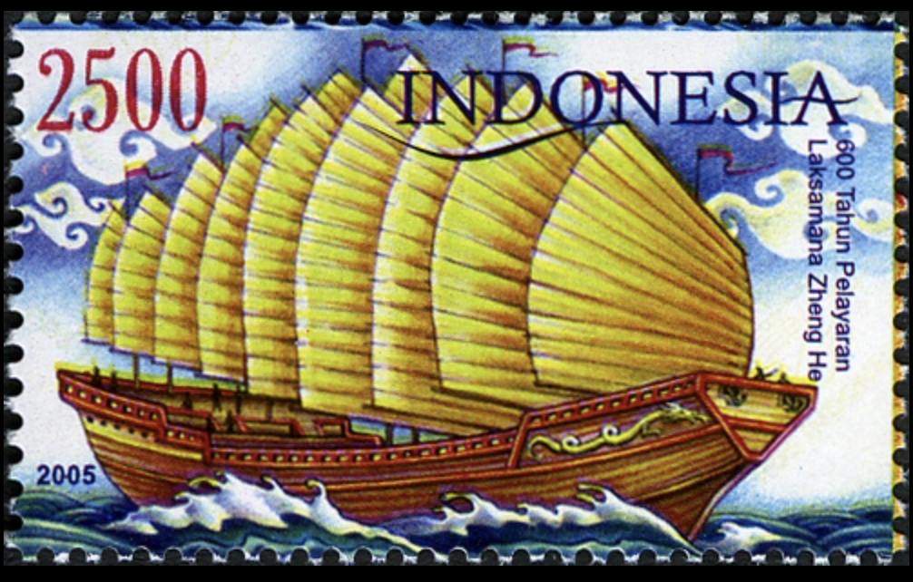
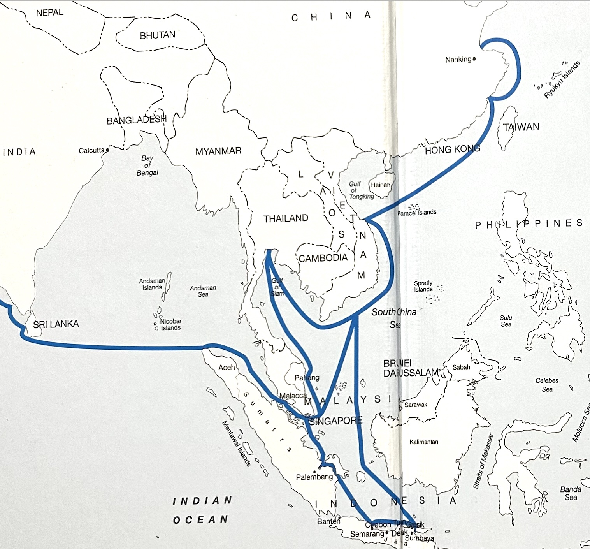

Zheng He’s expeditions marked a high point in Chinese maritime history and had lasting effects on East Asia, Southeast Asia, and the wider Indian Ocean world. They strengthened trade networks, promoted diplomatic exchange, and demonstrated technological achievement. In Vietnam and Indochina, they contributed to economic integration and cultural contact while also reflecting political tension with China. Viewed in the bigger picture of Asian and world history, Zheng He’s voyages remind us that the seas have long connected civilizations. They matter today because they show an early model of global interaction based on exchange rather than empire, and they continue to influence how Asia understands its maritime past and its role in the modern world.
Zheng He’s expeditions represented a peak moment in China’s long maritime tradition. Chinese sailors had traded across the South China Sea for centuries, but the Ming court transformed this practice into a state-sponsored naval project. The fleets included hundreds of ships and tens of thousands of crew members, combining diplomatic envoys, soldiers, interpreters, and merchants.
These voyages showed that China possessed advanced maritime technologies, including large multi-masted ships, watertight bulkheads, magnetic compasses, and detailed nautical charts. Rather than focusing on territorial conquest, the Ming government used naval power to project prestige and order across the seas. This approach contrasts with later European expansion, which was more directly tied to colonization and permanent overseas settlement.
A stamp from Indonesia commemorating Zheng He's voyage (source Wikipedia)
Zheng He’s fleets reshaped political and economic relations throughout East and Southeast Asia. The voyages strengthened China’s tributary system, in which foreign rulers sent envoys and gifts to the Ming court in exchange for recognition and protection. Key ports such as Malacca grew rapidly as commercial hubs because they became regular stops for Chinese fleets.:
In East Asian history, the expeditions demonstrated that maritime activity could complement land-based power. China, traditionally focused on agriculture and inland defense, briefly became a dominant naval force. This moment complicates the stereotype of China as purely inward-looking before modern times; instead, it shows that early fifteenth-century China was capable of global engagement.
Map of Zheng He's Voyages trhough Southeast Asia 3
Zheng He’s expeditions also affected Vietnam and the wider Indochina. Vietnam lay along the main maritime routes linking China to Southeast Asia and the Indian Ocean, making it strategically important.
Chinese fleets passed through or near Vietnamese ports, strengthening trade in rice, forest products, ceramics, and metals. Cultural exchange followed commercial contact: Chinese navigation practices, administrative ideas, and diplomatic rituals influenced Vietnamese court culture, while Chinese sailors encountered local customs, languages, and religions.
At the same time, these interactions were shaped by political tension. Vietnam had only recently regained independence from Chinese rule in the early fifteenth century, so Zheng He’s voyages symbolized both cooperation and competition. The presence of the fleets reminded regional states of Ming power, but it also integrated Vietnam and Indochina more deeply into the broader maritime economy of Asia.
Zheng He’s expeditions must be seen as part of a wider Asian maritime world. Long before European ships entered the Indian Ocean, Asian merchants and sailors linked China, Southeast Asia, India, and East Africa. Zheng He’s fleets did not create these networks, but they intensified and formalized them under state leadership.
Historically, this shows that globalization did not begin with Europe alone. Asia already had complex systems of trade and diplomacy. Zheng He’s voyages stand as evidence that large-scale, peaceful maritime exchange was possible without colonial domination. When the Ming government later ended these expeditions, China turned inward, and maritime leadership gradually shifted toward European powers.
The legacy of Zheng He is still important for understanding history and international relations. His voyages challenge the idea that only Europeans led global exploration, showing that non-European powers were active in maritime trade and diplomacy long before European empires expanded. They also show that influence can be achieved through trade and diplomacy, not just through military conquest.
Today, as interest in Asian trade routes and global commerce grows, Zheng He’s expeditions are often seen as an early example of cross-cultural exchange and international connection. For Vietnam and the rest of Indochina, his voyages represent a long history of contact with China that involved cooperation, competition, and cultural exchange—patterns that still influence the region today.
Ultimately, Zheng He’s voyages remind us that diplomacy, commerce, and cultural engagement can shape global connections as profoundly as conquest, offering a historical model for understanding today’s interconnected world.
® 2026 Phuong-Anh Nguyen. Created for HIS 111 Midterm Project. All rights reserved.